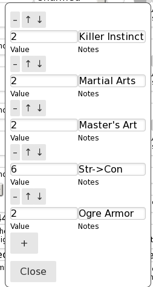

Character sheet management for FantasyCraft
This is a tool I wrote for my gaming group to help us manage our character sheets.
Installation
Install is easiest via a docker image.
A set of scripts to setup the docker images are here
Download and extract that, and edit the following files:
-
makeit.shset
HTTP_EXTERNAL_PORTto whichever port you want the webserver to listen to on your server. -
fccs-data/config.lispChange the string
(setf *prepend-path* "/fccs/")to be whichever path you want the application to be rooted at. For example, on this default setting the root path will be http://example.com/ -
mongrel2-data/mongrel2.conf- Replace the two occurences of "example.com" with your actual host name
-
Place your
Fantasy_Craft_Second_Printing.pdffile in fccs-dataIf you do not own a copy, you can buy one online at DriveThruRPG or elsewhere
-
If you want PDF export to work, place
Fantasy_Craft_Character_Sheets-v6-Fillable.pdfavailable for download from Crafty Game's site here -
If you wish to use the builtin https (not neccessary if you are using a secure reverse-proxy):
- Follow the instructions in
mongrel2-data/mongrel2.conffor commenting/uncommenting lines - Put your certificate chain (PEM format) in
mongrel2-data/certs/server.crt - Put your unencrypted private key file in
mongrel2-data/certs/server.key - In
makeit.shchangeHTTP_INTERNAL_PORTto 443
- Follow the instructions in
Next run sh makeit.sh to start everything up.
It will take about 1 minute for the tools to extract the data from the PDF, and
then you should be able to login at whichever port you configured
*prepend-path* to be. The default login is username admin password admin
I suggest you change the administrator password immediately (under account tools)
There is not currently a link to the administrator panel, but you can reach it
by simply adding "admin/" to the root path of the application (e.g.
http://example.com/fccs/admin/) it will not work without the trailing slash
(/).
Here you can add new users and change any user's password, and add or remove administrator privileges for other users.
Using
There are two types of fields white fields which are user-editable and gray fields which are calculated. Note that only very basic calculations are completely automated (e.g. adding strength to BAB). For any ability-based bonuses and penalties, you can add a modifier to any calculated field. Each modifier has a note attached to it, and there is no limit to how many modifiers you can add. This lets you easily track which abilities you have already factored in modifiers for.
As an example, here's the Damage bonus modifier list for a very min-maxed unarmed combat specialist: 
Your data is automatically saved to the server every 10s. There is currently no undo nor history tool, though managing multiple versions of a character (e.g. one for each level or after each adventure) is in the works.